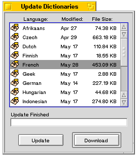

Lingua Documentation - Update Dictionaries
A Multilingual Translation Program
The Update Dictionaries window provides a simple interface for updating the dictionary text files used by Lingua.
To use, click the "Update" button to get the latest listing of dictionary files, with corresponding file sizes and modification dates. These are helpful to determine if you've got the latest dictionary files, or how long of a download to expect.
Use the Shift and Option (or Windows) keys to select all the files you wish to download, and click the "Download" button. Files are automatically downloaded and unzipped into the "dicts" folder where Lingua is located.
If, for any reason, you cannot connect to the Aevum Network, you can always visit the Lingua Dictionary Updates page and download them manually. Just make sure you extract the text files into the "dicts" folder in the same folder as the Lingua program.
Send comments, questions, and bug reports to dream@aevum.net
Usage of Lingua is subject to the licencing restrictions of the FPL